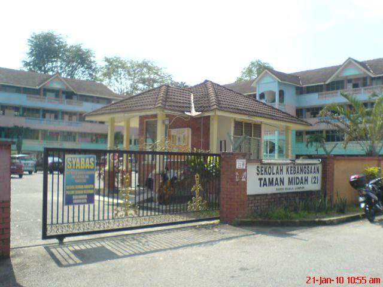
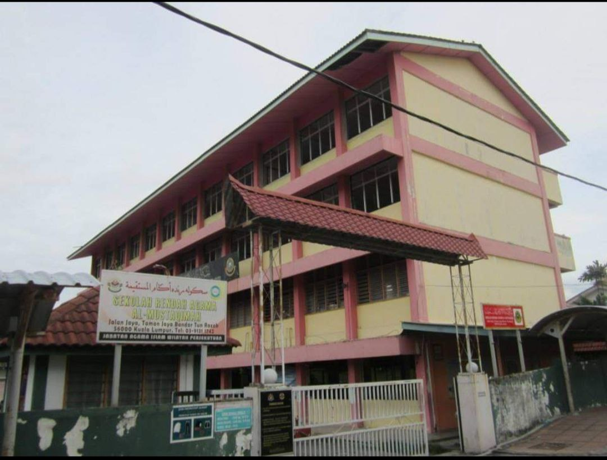
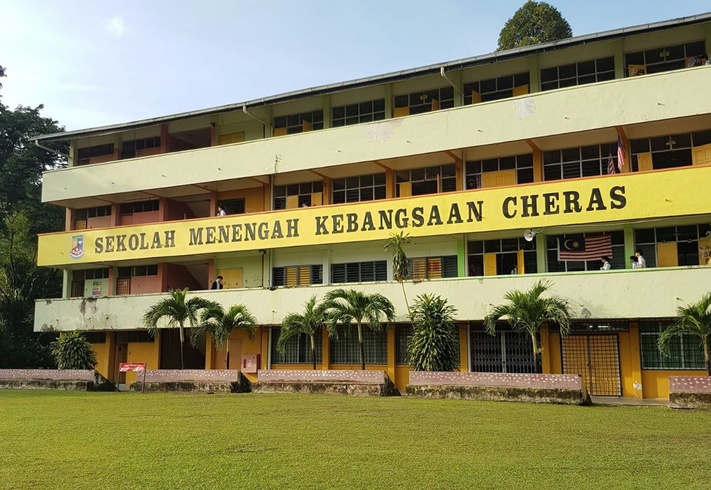

EDUCATION


- My early education started at Sekolah Kebangsaan Taman Midah 2. I am able to get 3As and 3Bs for my UPSR
- I also attended religious school which is Sekolah Rendah Agama Al-Mustaqimah. I managed to get 8As for UPKK and 7As for UPSRA

- I attended Sekolah Menengah Kebangsaan Cheras for my secondary education
- I might not do well in this stage of education, but i made a lot of memories